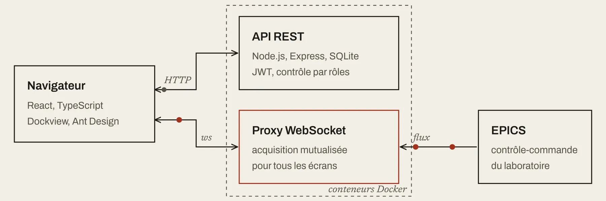
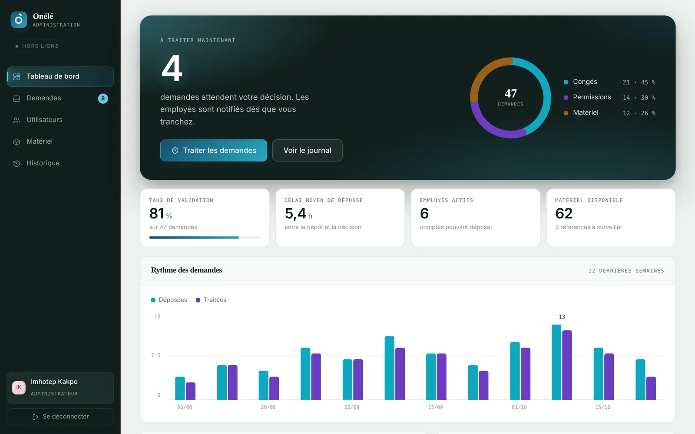
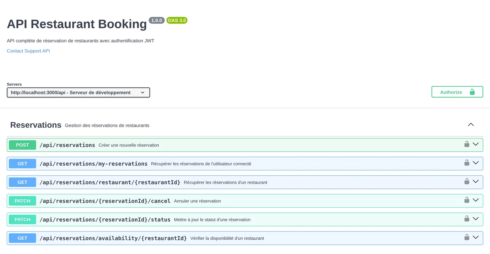

EPICS Viewer en service au CEA
Conçu et livré seul pendant mon stage. Le laboratoire LDISC l'utilise depuis août 2026 pour suivre ses équipements en temps réel.
Lire l'étude de cas ›
Discutez avec mon assistant 3D pour en savoir plus sur moi

Conçu et livré seul pendant mon stage. Le laboratoire LDISC l'utilise depuis août 2026 pour suivre ses équipements en temps réel.
Lire l'étude de cas ›
Les RH valident congés, permissions et matériel depuis le web, les employés déposent leurs demandes depuis l'appli.
Voir le code ›
Réservations, restaurants et utilisateurs, avec authentification JWT et tests automatisés.
Voir le code ›on:
push:
branches: [develop, main]
jobs:
lint-and-test:
runs-on: ubuntu-latest
build-docker:
needs: lint-and-test
permissions:
packages: writeChaque push lance les tests, construit les images Docker et les publie sur le registre GitHub.
Voir le code ›Trois plateformes web et mobiles auditées : une banque, un assureur et un organisme du secteur public.
Pour chacune, les risques de sécurité applicative et les écarts de conformité, consignés dans un rapport.
Tests sur les applications des clients, côté web et côté mobile.
Les vulnérabilités trouvées, remontées avec leur correctif.
Déploiement d'un outil de gouvernance, de gestion des risques et de conformité.
Le suivi de la conformité réuni au même endroit.
Accompagnement sur FSSN, PSSIE et PC-PKI, et sur la mise en place d'un SMSI.
Les écarts relevés exigence par exigence.
Un audit apprend à lire une application du côté de celui qui cherche la faille. En revenant au développement, j'ai gardé ce réflexe. Au CEA/IRFU, l'API d'EPICS Viewer chiffre ses secrets et cloisonne les accès par rôle. Dans Onélé, toutes les routes qui décident d'une demande passent par un middleware réservé aux RH.
// Administration / RH (web)
Route::middleware('admin')->group(function () {
Route::patch('/demandes/{demande}/statut', [DemandeController::class, 'updateStatut']);
Route::post('/materiels', [MaterielController::class, 'store']);
Route::get('/materiels/{materiel}', [MaterielController::class, 'show']);
Route::put('/materiels/{materiel}', [MaterielController::class, 'update']);
Route::delete('/materiels/{materiel}', [MaterielController::class, 'destroy']);
Route::apiResource('utilisateurs', UserController::class)->parameters(['utilisateurs' => 'user']);
Route::get('/dashboard', [DashboardController::class, 'index']);
Route::get('/historiques', [HistoriqueController::class, 'index']);
});« D'abord que ça marche,Kent Beck
ensuite que ce soit propre, enfin que ce soit rapide. »
C'est la règle que je suis sur chaque projet. Je ne cherche pas l'optimisation avant d'avoir une application qui fonctionne et des tests pour le prouver.
Bachelor, projets en équipe
Alternance développeur
Stage full stack
Cybersécurité
Bachelor, titre RNCP
Stage, EPICS Viewer
Développeur Manager Full Stack
De 2021 à 2024, à EPITECH Cotonou, presque tout se faisait en groupe. J'y ai développé en React Native un trombinoscope et AREA, une application qui reprend le principe d'IFTTT : connecter des services entre eux avec des déclencheurs et des actions.
En alternance chez TICS Master, j'ai construit une messagerie temps réel avec la stack MERN. En stage chez Prosuite Africa, j'ai travaillé sur ProShare, une plateforme immobilière, et sur l'intégration d'IA dans les pipelines de prospects.
D'avril à août 2026, au laboratoire LDISC, j'ai mené EPICS Viewer jusqu'à sa version 2.0 : 73 tests back-end sur 15 modules, une CI GitLab refaite, une API documentée en OpenAPI et une interface utilisable sur mobile.
Je suis en Mastère Développeur Manager Full Stack à l'EFREI Paris et je cherche un stage de six mois, de janvier à juin 2027, en Île-de-France.
React, Node.js, Laravel et Flutter. De l'API jusqu'au déploiement.
Un an de missions PASSI et de tests d'intrusion chez Global IT Service.
Mastère Développeur Manager Full Stack à l'EFREI Paris, 2026 – 2028.
Et aussi musculation, football, natation et jeux vidéo.
Bonjour, je m'appelle Imhotep Kakpo. Sur GitHub, vous me trouverez sous le nom Agbadogbe.
Mon parcours a commencé à Cotonou, au Bénin, avec un Bachelor à EPITECH. J'y ai appris à développer en équipe, puis j'ai travaillé sur une messagerie temps réel chez TICS Master et sur une plateforme immobilière chez Prosuite Africa.
J'ai ensuite passé un an dans la cybersécurité, chez Global IT Service, à auditer des applications web et mobiles. Depuis, je conçois mes applications en pensant aussi à ceux qui chercheront à les attaquer.
Aujourd'hui je vis en région parisienne. Après six mois au CEA/IRFU, je suis en Mastère Développeur Manager Full Stack à l'EFREI. Je parle français, fon et anglais.
Pour en savoir plus sur moi, discutez avec mon assistant.